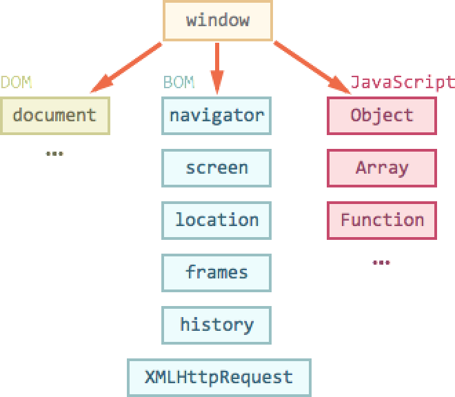

BOM объекты
С помощью объектной модели браузера (BOM) Вы можете управлять поведением браузера из JavaScript.
BOM включает в себя несколько объектов.
BOM объекты:
Объект window является корневым объектом JavaScript. Все объекты JavaScript, а также переменные и функции определяемые пользователем хранятся в объекте window.
Если Вы знаете имя другого открытого окна Вы можете обращаться к объектам созданным в другом окне.
Писать "window." при обращении к объектам и переменным необязательно так как JavaScript подставляет его автоматически.
//Обратимся к объекту navigator document.write(window.navigator.appName+'<br />'); //Теперь обратимся к объекту navigator опустив window document.write(navigator.appName); //Создадим переменную a (то же самое что a=10) window.a=10; //Выведим значение переменной a на экран document.write(a+'<br />'); document.write(window.a);
Результат выполнения кода:
Выполнить кодСвойства объекта window
С помощью свойства length Вы можете узнать сколько фрэймов (включая iframes) присутствует в данном окне.
//Узнаем количество фрэймов на странице document.write(window.length);
Методы объекта window
С помощью метода alert() Вы можете вывести окно оповещения.
//Выведем окно оповещения
alert('Это окно оповещения');
С помощью метода open() Вы можете открыть новое окно.
//Откроем новое пустое окно
nw=open();
//Выведем сообщение в новое окно
nw.document.write('Этот текст был выведен с помощью JavaScript.');
С помощью метода close() Вы можете закрыть окно.
<script type=text/javascript>
//Откроем новое окно
nw=open();
//Выведем сообщение в новое окно
nw.document.write('Этот текст был выведен с помощью JavaScript.');
/* Создадим функцию cl() закрывающую окно nw которая будет вызываться после нажатия на кнопку */
function cl()
{
nw.close();
}
</script>
<input type='button' value='Закрыть окно' onclick='cl()' />
С помощью метода print() Вы можете распечатать содержимое окна на принтере.
<script type=text/javascript>
/* Создадим функцию pr() печатающую содержимое данного окна после нажатия на кнопку */
function pr()
{
print();
}
</script>
<form>
<input type='button' value='Напечатать содержимое данной страницы' onclick='pr()' />
</form>
Полный список свойств и методов данного объекта Вы можете найти в нашем JavaScript справочнике